Lecture 5: Building Systems
Lecture 5
This chapter covers the components of a building that enables seismic load resistance and provides for building safety. This includes different structural systems and their limitations, force distribution, and the design parameters that are used. It is important to understand how the different parts of a building work together to allow for load transfer and prevent building collapse.
Topics that are covered in this lecture corresponding to the Exam Requirements are:
- The Different Structural Systems and Their Design Parameters
- Limitations of Different Structural Systems
- Distributions of Internal and External Forces
- Assumptions Controlling the Analysis of Rigid Diaphragms
- Assumptions Controlling the Analysis of Flexible Diaphragms
What is a Building?
A building is a permanent or temporary structure with a single or multiple floors and enclosed within vertical walls and a roof. The horizontal elements are made of beams, and floorings that can be made of thick concrete sections (aka slabs), concrete topped metal deck, wood etc, or diaphragms. Beams typically transfer the loads from the floor surface onto the columns. The floorings act as a support surface for people and objects to stand on by sitting on top of the beams and girders, where girders are just huge beams. In a building, the columns are vertical members that can both be aesthetically pleasing and structurally play the role of transferring the loads coming onto it to the foundation. Walls are vertical members that provide safety and shelter from the elements, such as sunshine and rain, and also allow ventilation and access to the building. The walls support the roof and the floors above it and similar to columns, they too transfer the weight from the stories above to the foundation below. They can also be used to divide the structure into rooms. A foundation is a building component that helps to prevent building settlement, where the building moves downward into the ground, by uniformly transferring the loads coming from the superstructure (main building) to the soil beneath it.
The ability for a building to provide us shelter is not just because of walls and floors, but also the connections points. Without a good connection between building elements, the walls and floors would simply fall. Specific connections must be created between elements of the structure to ensure a continuous load path. This means that vertical or lateral loads can effectively be transmitted throughout the structure.
Consider the connection between the structural walls and the roof or floor construction, as per ASCE 7-16, Sections 1.4.1 and 1.4.4. Structural walls provide vertical load bearing or lateral shear resistance for a portion of the structure. These walls should be anchored to the roof, all floors, and members supported by or providing lateral support to the wall. These connections must be able to resist a strength level horizontal force perpendicular to the plane of the wall equal to 0.2 times the weight of the wall tributary to the connection, but not less than 5 psf.
{kind=link}
Image via concrete coalition
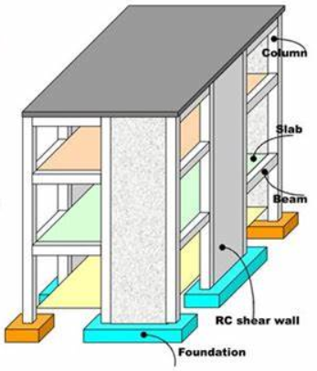Image via SlideShare
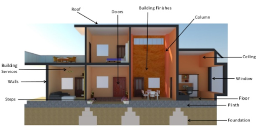Image via Steel Construction
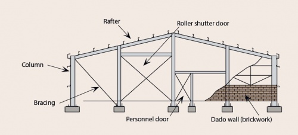Vertical and Lateral Systems
Structural elements can be commonly categorized based on the type of force they resist:
- Vertical Forces (gravity loads, snow and rain loads)
- Lateral Forces (wind, seismic and earth loads)
Vertical systems are also known as vertical force resisting systems, which means that they only resist vertical loads. On the other hand, lateral systems, otherwise known as lateral force resisting systems, resist lateral loads. Examples of both types of systems are listed below:
Vertical Force Resisting Systems:- Gravity Beams
- Gravity Columns
- Joists
- Purlins
- Metal Deck
- Concrete Slab
Lateral Force Resisting Systems:
- Moment Frames
- Braced Frames
- Braced Frames
- Cantilever Columns
- Shear Walls
- Diaphragms
Notice that for vertical force resisting systems, we specifically listed ‘Gravity Beams’ and ‘Gravity Columns’. That’s because a column or beam could also be a part of the lateral resisting system where it can be used to make sure that the building stands up for vertical loading, and stays up during an earthquake by resisting the lateral forces. A structural system that resists both vertical and lateral forces could be called a ‘Moment Frame.’ You’re not expected to have in-depth knowledge of lateral systems or vertical systems for the seismic exam, this is more of an FYI.
We’ve identified the parts of a structure that add height (columns/walls) and provide support for floors (beams and joists), but there is another part of the structure right at our feet: the diaphragm. You may have heard the term ‘diaphragm’ before, maybe in a singing class or structural analysis class. In structural engineering, a diaphragm is the part of a building that connects different structural system components together to transfer loads. This can be a roof diaphragm, located at the very top of the building, a floor diaphragm, or even a vertical diaphragm (shear wall). Since diaphragms are typically referred to as horizontal building components, we will be doing the same here. To reiterate, the floor diaphragm is the flat structural surface that serves to:
- 1) Provide a surface to walk on (or attach finish materials, then walk on).
- 2) Transfer lateral forces into the lateral resisting elements.
The diaphragm is a general term that denotes purpose, not the specific material. Depending on the type of construction, a diaphragm could be made out of a variety of different materials, such as ¾” T&G sheathing, metal deck, concrete slab, or even cross laminated timber (CLT). In any case, a diaphragm will typically be designed to resist gravity loads, bending, and a minimum amount of shear based on structural analysis. Since force distribution is one of the main functions of the diaphragm, it is important to learn about the assumptions regarding the flexibility of diaphragms.
Image via Seismic Resilience
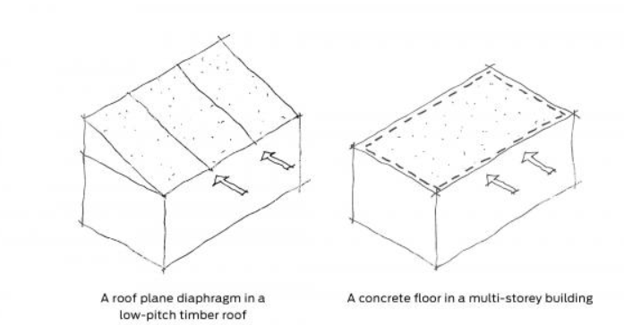The stiffness, or flexibility, of a diaphragm is also known as the ability to resist horizontal displacement resulting from lateral forces that act on the same plane as the diaphragm. In design, diaphragms can be simplified and idealized into three different categories of stiffness:
- Flexible
- Rigid
- Semi-rigid
The idealized behavior of diaphragms is tied to the geometry of the floor system and the relative stiffness is related to the adjacent lateral force resisting system (LFRS), which dictates the method used for determining the force distribution and type/amount of connections between the walls and the diaphragm(s). A diaphragm that deflects significantly along its plane from lateral loads is typically considered flexible, while a diaphragm that is stiff and does not deflect laterally may be considered rigid. The exact qualifications for flexible or rigid are outlined below.
ASCE 7, Section 12.3 lists out the conditions for a diaphragm to lie in a certain stiffness category. Typically, untopped steel and wood diaphragms are allowed to be idealized as flexible if any of the three conditions are satisfied:
- Vertical elements are braced frames, composite braced frames, or composite shear walls made of steel, concrete, or masonry materials.
- The structures being designed are for one to two-families.
- For light-frame construction, no topping material is allowed on wood diaphragms, except for non-structural toppings that are not greater than 1.5 in and the allowable drift per story is in compliance for the vertical elements of the seismic force-resisting system.
Additionally, another way to idealize flexible diaphragms is through equation 12.3-1:
$$(δ_\MDD)/(\∆_\ADVE) > 2$$
Where δMDD is the maximum diaphragm deflection and ΔADVE is the average drift of the vertical element. Rigid diaphragms are usually idealized for structures of concrete materials with no horizontal irregularities and a span-to-depth ratio not greater than 3. Calculations for flexible and rigid diaphragms will be discussed in greater detail in a later section. For now, the important thing is to understand the purpose of diaphragms.
Image via Civil Engineering World
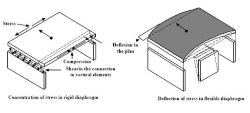For flexible diaphragms, force distribution occurs similarly to vertical load distribution, which is based on tributary area. This is a simple calculation compared to that of a rigid diaphragm. While on the other hand, rigid diaphragms distribute forces based on the stiffness of the vertical members. It is also important to remember that torsion, the twisting motion, must also be considered for the analysis and design of rigid diaphragms.
Different Types of Structural Systems
If you’re not used to building systems, it is worth it to familiarize yourself with how sketches relate to the building. The last thing you want is to be confused on the exam because of a picture. The following shows sketches of different lateral systems for a better understanding which are further elaborated one-by-one. The ‘elevation view’ is the side view of a structure as if you were standing on the street looking at a building. The ‘plan view’ is the top-down view of a building, as if you were floating above the building looking downwards.
Image via Liberal Dictionary
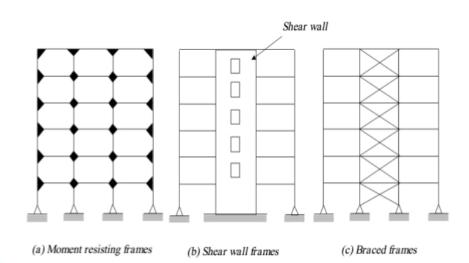Sketch 01: Sample Building with Shear Walls
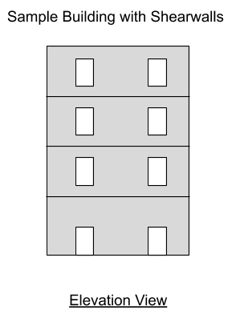 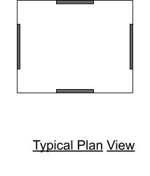In a system using shear walls, the elevation view does not show any specific beam/column framing, instead there are walls with openings. In the plan view, the walls are drawn with a rectangular section, not a single line. The walls are visibly thicker, and could be shaded darker or even filled in with a cross hatch.
In real world applications, shear walls can be commonly found in typical wood framed houses and concrete buildings. They can also be made of masonry.
Sketch 02: Sample Building with Moment Frames
Moment frames can be made of steel or concrete. They are more flexible than shear walls. In a building with moment frames, the elevation view should show solid lines that fully connect to each other. If the columns/beams are steel, you could expect solid lines. If the beams/columns are concrete, they could be drawn as rectangles.
Notice that in the elevation view, there is no clear indication of where windows or doors are. This is because the elevation view only communicates the structural elements. The shear wall system showed openings because those show the extent of the structural wall system. The plan view will differ depending on the use of steel or concrete as the framing system. Steel systems may show a steel cross shape, like an I-beam, whereas a concrete system may just show rectangles.
Sketch 03: Building with Braced Frames
Image via Slideshare
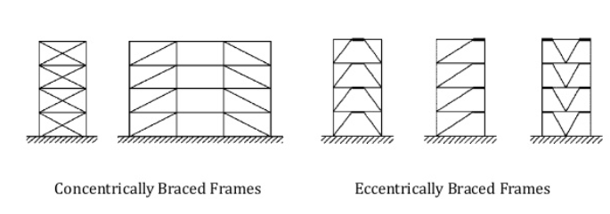In a building, braced frames are very recognizable because of the diagonal members. Braced frames are usually made of steel, and are stiffer than moment frames. There are different types of braced frames: concentric and eccentric (shown below).
The elevation view and plan view of a steel braced frame are shown below. To show the location of the braces on the plan view, there may be a dashed line offset from the center of the wall line.
Sketch 04: Building with Inner Core Shear Wall and Steel Outrigger Framing
Image via University of Dayton
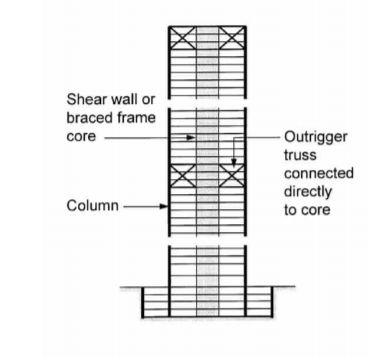These types of combined systems are less common, but the giveaway is any view that shows a more complex framing system that includes any combination of braces, shear walls, outriggers, or moment frames. This system is usually used for tall buildings (high-rises) to ensure the performance of these structures in earthquake events. (In other words, this system helps to control drift and provide sufficient stiffness for lateral resistance).
To continue further in this discussion, it is worth noting that there are many exceptions to everything that will be said here. New structural design engineers could point out structural systems that go against our examples, but that’s not the goal here. Our goal is to pass the Seismic Exam, and it should be stressed that the board of engineers don’t expect you to know how to design specific lateral systems or know all about them, that level of understanding is beyond the scope of the exam. So our examples will be simple, with just enough context on the vertical and horizontal load distribution analysis that IS required for the exam.
The Sky is (Not) the Limit
The elements of lateral and vertical seismic force-resisting systems, such as members and their connections, are designed with the structural system limitations in mind, i.e., the structural height, hn, and Seismic Design Category (SDC). Table 12.2-1 of ASCE 7-16, a section of which is shown below, provides a guideline for structural system selection and the detailing requirements.
ASCE 7-16 Section 12.2
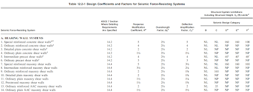In Table 12.2-1, each seismic force-resisting system is subdivided by the types of vertical elements used to resist lateral seismic forces. The appropriate response modification coefficient, R; overstrength factor, Ω0; and deflection amplification factor, Cd are then used to determine the base shear, element design forces, and design story drift for the given structure. These concepts are covered in more detail in the forthcoming chapters.
As per Section 12.2.1.1 of ASCE 7, for alternative structural systems that are not contained in Table 12.2-1, the accompanying set of design criteria and substantiating analytical and test data are permitted on submission and approval by the authority having jurisdiction and independent structural design review conforming to Section 16.5 of ASCE 7-16. In fact, we aren’t going to deal with alternative structural systems on the seismic exam, since they will only give systems that are in Table 12.2-1.
Example #1: A developer plans on constructing a building in Arizona. Given that the SDC is B and a structural engineer decides to design a steel special moment frame, what is the maximum height that this building can be?
Solution: Given the type of LFRS (Steel Special Moment Frame), and the SDC is B, we can refer to ASCE 7 table 12.2-1 for the maximum height. The table value reads ”NL”, which is an abbreviation for “Not Limited”. So, the direct answer is that ASCE 7-16 does not impose any height limits for this type of LFRS in SDC B. However, does this mean I can build it infinitely as high as I want? No, we cannot truly build things infinitely high because increased height will still increase gravity loads and cost to the point that it is not worth the extra height. Also, there are zoning requirements that typically will limit the maximum height of a structure.
Example #2: Now consider that a developer wants to construct a new library at South Pasadena, CA where SDC = D. The structural engineer suggests that the building should be designed as steel ordinary moment frame to save money on construction labor costs. What is the maximum allowable height of the library?
Solution: Again, we look at ASCE 7-16 Table 12.2-1 for the steel ordinary moment frame with its correlating SDC. The table value reas "NP" for "Not Permitted." It would seem that this lateral system is not allowed for the SDC. However, even though this system is not permitted, there are exceptions! For this type of frame, there is a footnote “l” that leads you to section 12.2.5.6, where it explains that this ordinary moment frame can be built up to 65 ft, given the dead load is low enough. So the answer is the library could be built up to a height of 65 ft.
Tell Me a Story
Something that may be confusing when talking about buildings is the idea of floors and stories. Stories are more of a volumetric description; floors are a planar description. The above image shows some clarification on this. Note in the image that stories are the space between floors. The image shows a 4-story building, so that’s essentially 4 floors + a roof.
The Seismic Exam may have questions that don’t provide pictures to go along with the text. You will need to immediately understand the questions being asked, and that means not being confused on the idea of story vs floor!
Building Period Nomenclature
Over the past few lectures we learned about resonance and the different frequencies of waves in earthquakes. Now it’s time to learn about the different frequencies of buildings, and how to determine the fundamental period of a structure using ASCE 7-16.
Recap: A seismic design response spectrum is a graph that shows acceleration vs period for a SDOF system subjected to a ground motion. The input to this graph is the period of the structure. The accelerations in the graph are the maximum accelerations ‘experienced’ on a building with that period. This means that the building period is used to determine the design accelerations, which are important parameters for analysis.
So how do we determine the period of a structure? And why is the fundamental period fundamental?
The period of a building structure is approximated in ASCE 7-16, Section 12.8.2.
$$T_a = C_th_n^x$$
Ct and x are coefficients that rely on the lateral system, and hn is simply the height of the structure. Using Table 12.8-2 to determine the coefficients and plugging in our known building height, this equation is pretty simple. But why does it say approximate? And why fundamental?
The equation itself is an approximation because determining the true period of a building is way more complicated than what can be done with a single equation. Instead of forcing engineers to do complex analysis, the ASCE 7-16 approximation is a much faster way to get a period for use with the design response spectrum.
Buildings have many different connection points and mass sources that allows it to move in a variety of ways. There is, however, a ‘primary’ motion that a building would like to move in where most of the mass is being mobilized. This ‘primary’ motion will take the longest amount of time to complete, coined the ‘fundamental’ period. The term ‘fundamental’ is interchangeable with ‘longest’ as it relates to building period. This again relates to seismic engineering because F=ma. If more mass is accelerating in the same direction, the force resultant will be larger.
Buildings also have more than one period! Single Degree of Freedom (SDOF) systems have only one period - the fundamental period, while Multi-Degree of Freedom (MDOF) systems (most buildings) have more than one period. We have previously been using examples of SDOF systems to talk about periods, but a real building is more complex and can move in many ways.
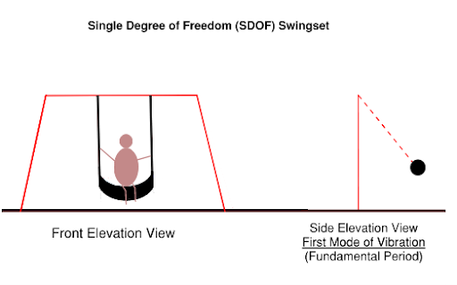For example, a swing set moving back and forth has a natural period. It’s simple to see how this can be a SDOF system, and we can intuitively anticipate how the mass will move. What can we do to make this a MDOF system? We could stack another swing set on top!
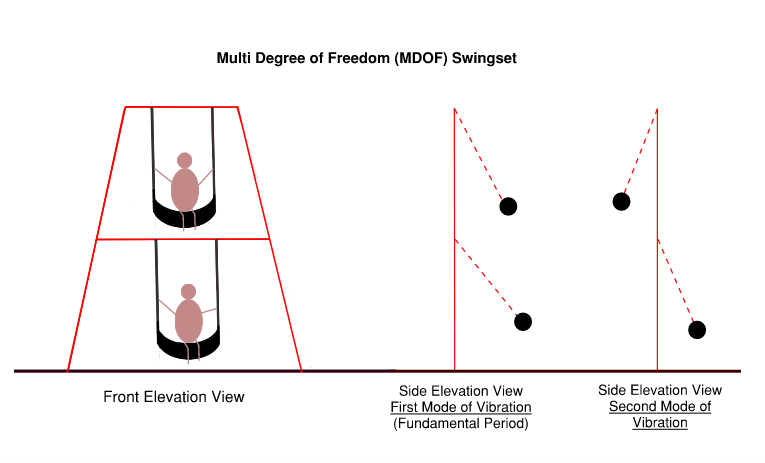If we could find two brave souls to attempt this contraption, we would see that the motions of the people swinging back and forth would line up in the 'fundamental' period but not the second period. Depending on the mass of each participant and the length of the attachment chain, there would be specific resonant frequencies of the system. Although the participants are attached to the same structure, they can still move somewhat independently of one another. This is similar to a building with multiple floors.
Another way to describe different periods of a building are the ‘modes of vibration.’ A mode of vibration is the way that a structure moves as it resonates at one of its periods. The ‘first mode’ is the ‘longest period’ or the ‘fundamental period.’ For a 2D frame, the modes of vibration might look like the below excerpt:
FEMA 454
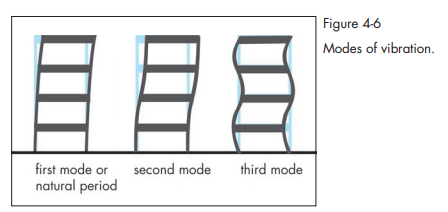 Single Degree Of Freedom (SDOF) PeriodSince force is related to the mass of the structure being accelerated and the 'fundamental' period describes the motion of a building with the most mass participation, then a ground motion that matches this period would end up creating the most force in the structure. This is why we want to know the fundamental period of a structure, and why we use it to determine our acceleration parameters, and then our forces.
We can determine the exact period for a typical SDOF system pretty quickly, but for multi- degree of freedom systems we have to use matrices that are better suited for a computer and more complex analysis. Real buildings have multiple degrees of freedom, so we cannot use the simplified SDOF period equations.
Time period (sec), T = 2π/ω
Where,
- ω = natural frequency = (k/m)½
- m = mass
- k -= stiffness
On Rearranging: Time period (sec) = T = 2π(m/k)½
The above equation represents the period of a SDOF system. It would be great if we could use this one equation for actual buildings, but unfortunately it only works when there is a single 'input'. For every degree of freedom in a structure, there is another index in the stiffness matrix! So if we have a SDOF system, there is only ONE value for stiffness, k, and one value for its mass, m. This means we can divide them like normal. If we have more than one degree of freedom, or an ‘MDOF’ structure, then we would essentially be dealing with matrices doing division. This would be a nightmare to do by hand for a large building where even defining all of the degrees of freedom would be tough. All the more reason then to have some simplified equation that will do it in one go!
Remember how our analysis for the response spectrum relied on a SDOF system? The fundamental (and only) period of that SDOF system most closely matches the motion of the fundamental period of a building. We could go on in more detail with this, but it’s not necessary to pass the Seismic Exam.
The Seismic Exam may still ask you to determine the fundamental period of an SDOF frame system, so we’ll discuss this process next.
Period of an SDOF Without Using ASCE 7First, some info on what the stiffness ‘k’ represents: ‘k’ is a measure of the resistance that a structure or system has to deflection. A larger ‘k’ value means a higher stiffness, and higher resistance to deflection. A larger stiffness also means a lower period (since ‘k’ is on the denominator of the period equation). This makes sense intuitively. A stiff object will want to return to its original shape quicker than a flexible object, so it will also vibrate quicker than a flexible object. Faster vibrations (frequency) have a lower period.
Take a look at the deflection for a simple cantilever column subjected to a transverse point load at its tip which deflects by a distance 𐊅 = Ph3/3EI.
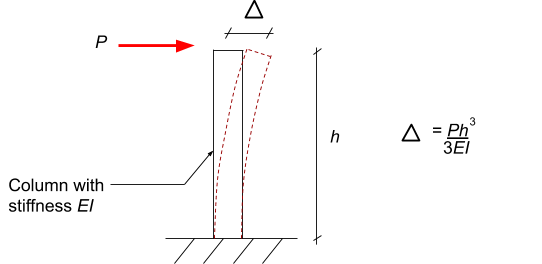The stiffness is just the resistance to deflection, so it is the inverse of the deflection equation:
k = 3(EI)/h3
The two types of column stiffness that you need to know for the exam are:
i. Fixed-Free Column:
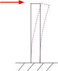k = 3(EI)/h3
This column is 100% fixed against rotation at one end, and free (0% fixed) against rotation at the other end.
Note: If there’s nothing at the top of column, then it is automatically free (0% restrained).
ii. Fixed-Fixed Column:
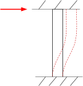k = 12(EI)/h3
This column is 100% fixed against rotation at both ends.
The equations for stiffness require either a 100% or 0% rotational stiffness. These simplified assumptions are allowed for the SDOF system because of the single degree of freedom nature. In reality, if we have beams connecting to the tops of these columns, then the beams will create some level of stiffness in-between those percentages. But for the Seismic Exam, you will be dealing with the easier 100% and 0% cases so these formulas will apply.
The Seismic Exam may require you to calculate the period of a simple cantilever structure with a lumped mass at the top. This is fairly common on the exam because it’s simple enough to calculate by hand. Let’s calculate the period of the cantilever structure below:
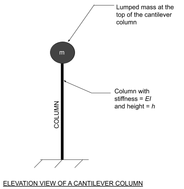Reviewing the above equations for period and stiffness, solving the period of this system is as follows: $$\[T=2𝝅√{m/k}\]$$
Now we just need to input our stiffness.
k = stiffness for cantilever column with NO top restraint/fixity (fixed-free column) = 3EI/h3
$$\[T = 2𝝅√{m/((3EI)/h^3)}\]$$
And that’s it!
A SDOF system can either be a lumped mass with a cantilever column or a frame story. Now that we have learned how to determine the period for a SDOF system with a cantilever column, let's learn how to calculate the time period for a Single-Story Frame.
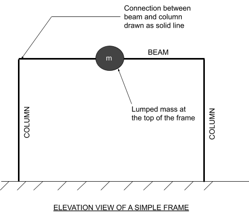The above picture shows a structural frame system that can only move in one direction with a single lumped mass, therefore it is an SDOF. There is a beam connected to the top of the columns and depending on how this beam is connected it will affect the stiffness of the column. If the beam is rigidly connected, then the column won’t be able to rotate if a load is applied across the top of the frame (making the column stiffer). If the beam is NOT rigidly connected (like a pin or shear connection), then the column will behave as a pure cantilever. The way these beams are connected to the columns will affect those column’s stiffness values.
The above drawing shows the beam as a solid line touching the solid line of the column, so we could infer it is a moment connection (rigidly bracing the top of the column). This is just standard convention for this type of drawing. You’ll be explicitly told on the exam how the beam is attached to the column, so don’t stress about that detail. In any case, a moment connection means the column is fixed at that connection point, so the columns are fixed-fixed (fixed at the top and fixed at the bottom). We know the bottom is 'fixed' because the line is drawn directly into the ground surface without any sort of triangular/circular 'pin'.
To calculate the stiffness of the above frame, simply add up the stiffness of each column. Using the k value for a fixed-fixed column, and assuming the EI of each column is the same, then our total stiffness is just:
$$k=∑_c_o_l_u_m_n_s{12EI_c}/{h^3}=24{EI_c}/{h^3}$$
This equation works because the frame is similar to a set of springs in parallel, where the stiffness is additive. There is another way to add up stiffness of elements, but it’s not going to be on the Seismic Exam so we won’t cover it here.
Let’s look at one more example with pinned connections:
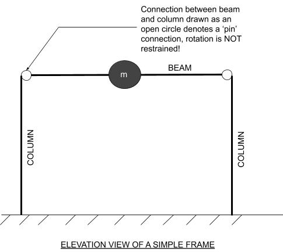The top of our columns are attached to the beams, but the connection is indicated as a 'pin' so it is not rigid enough to transfer rotational forces, therefore the columns are actually similar to a cantilever column (fixed-free)! So the total frame stiffness would be:
$$k=∑_c_o_l_u_m_n_s{3EI_c}/{h^3}=6{EI_c}/{h^3} $$
Frames can be set up any number of ways, with multiple columns that have different connections, EI values, and even heights for the columns. But the process is still the same no matter what. Just identify the type of connection, select either the fixed-fixed column or fixed-pin column stiffness, then add it all up. Remember this is relatively simple because of the assumptions provided by calling it a SDOF system with a single lumped mass, with columns that have either 100% end rotational fixity, or 0% rotation fixity.
What if we don’t have an SDOF, or columns with this type of stiffness relationship? Why can’t we just use the above k values?
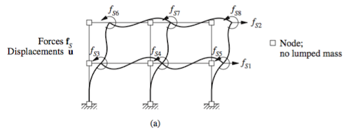 Dynamics of Structures, Chopra Ch 9If we have a frame shown above, something that is clearly NOT a SDOF system because of the two floor levels, our stiffness would not be represented by a single number, it would be represented by a stiffness matrix:
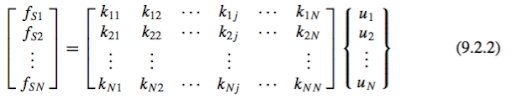And we couldn’t even use a single mass because we would have a mass matrix:
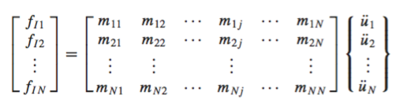?
Let’s stop right here and conclude that having a MDOF system and more realistic end conditions makes this more complicated. We don’t need to know any of this for the Seismic Exam, and we don’t even need to know this to use the ASCE 7 approximations. It’s enough to say that a real building structure is NOT a SDOF, and that the ‘substantiated’ calculation of building period would involve matrices that are better suited for computers.
Now that we’ve covered how to actually determine the stiffness of a simple structure and understand why determining the building period is complicated, let’s look at how we can approximate the period of a building per ASCE 7.
Period of a Building Using ASCE 7The period of a building is used in seismic design to determine the correct acceleration parameter from the seismic response spectrum. Since buildings have many degrees of freedom and calculating the exact periods can be time consuming, an approximation is provided by ASCE 7, Ch 12.8.
The code provides two ways for calculating fundamental period:
- 1. Provide a substantiated analysis using acceptable methods (like creating a model in a computer program) to determine T.
- 2. Use any of the equations 12.8-7, 12.8-8, 12.8-9 and/or 12.8-10 that is applicable to our building to determine Ta.
Notice that if you use a substantiated analysis to determine a more accurate building period T, it is still limited to Cu x Ta. Limiting the building period makes the design more conservative because higher periods tend to have lower acceleration values on the seismic design response spectrum.
For the seismic exam we will only be using the second option of defining Ta via the equations in ASCE 7.
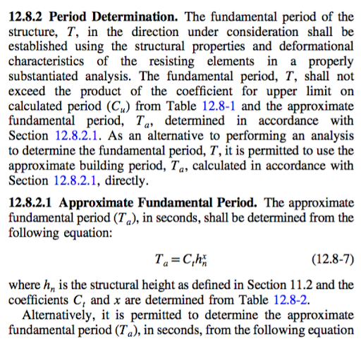
ASCE 7-16 Section 12.8.2-12.8.2.1
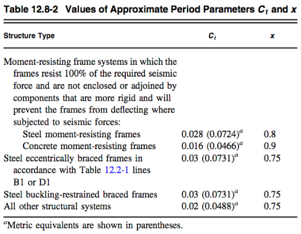 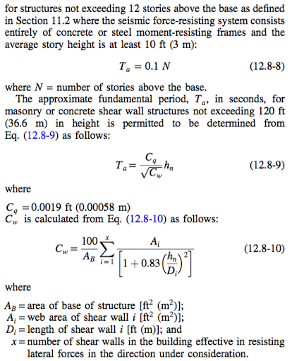ASCE 7-16 Table 12.8-2
Building Period Examples
In this section we will calculate the building period for several different examples.
Example #1: Determine the period of a 10-story steel moment frame building. Typical story height is 10ft.
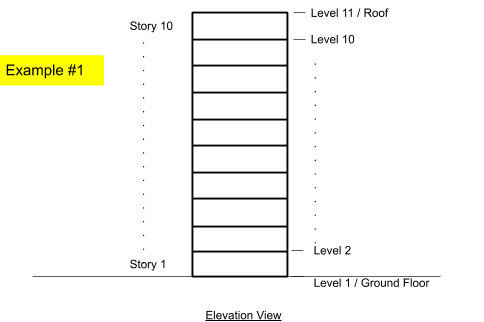Solution: Given the type of LFRS (Steel Moment Frame), the total number of stories (10) and the average story height (10ft) we can determine hn and ct per ASCE 7 eqn. 12.8-7, or we could just use eqn 12.8-8. Let’s do both for example.
Method #1 using the equation from 12.8-2:
hn = 10 stories x 10ft = 100ft
ct = 0.028 (Table 12.8-2 Steel Moment Frame)
x = 0.8 (Table 12.8 -2 Steel Moment Frame)
Ta = cthnx = (0.028)(100)(0.8) = 1.1s (ASCE 7 eqn 12.8-7)
Method #2 using equation 12.8-8
N = 10 (number of stories)
Ta=0.1N= 0.1(10) = 1.0s
The different methods produce very close accelerations, and it could be assumed that for the Seismic Exam either method is acceptable (if it is applicable to the lateral system, heights, etc).
Example #2: Determine the period of a single-story wood framed house with a story height of 9ft.
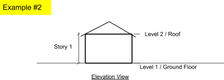Solution: We are not explicitly told the lateral system, but a typical wood framed house will have wood studs and wood sheathing over the exterior walls, creating a shear wall lateral system. Unless told otherwise, this is an appropriate assumption, and may be the only assumption you have to make when determining lateral systems on the seismic exam. The period is determined again from ASCE 7, Section 12.8.2.1, with inputs of the lateral system and building type.
We cannot use the simple approximation of eqn 12.8-8 because our system is a shear wall, not a concrete or steel moment frame. We also cannot use eqn 12.8-9 because that is for concrete or masonry shear walls. Therefore, we have only one option, which is eqn 12.8-7.
hn = 1 stories x 9ft = 9ft
ct = 0.02 (Table 12.8-2 All other systems)
x = 0.75 (Table 12.8 -2 All other systems)
Ta = cthnx = (0.02)(9)(0.75) = 0.1s (ASCE 7, eqn. 12.8-7)
Clearly this period is much shorter than the ten-story moment frame from the previous example. In practice, engineers will often not bother calculating the period for such short structures, since they know the corresponding acceleration from the response spectrum will just be SDS.
Two Sides to Every StoryA quick note, we usually build 3D rectangular buildings. Earthquake accelerations are assumed to be able to occur in any direction, so how do we decide how they will ‘hit’ a rectangular building? To make life easy, structural engineers just analyze the accelerations in two primary directions (and add an extra 30% of force to the other direction, we’ll cover that later in the base shear section). These directions are parallel to each side of the structure because this will line up perfectly with the LFRS. This means we are going to generate forces in two orthogonal directions, so we will need to evaluate the ‘fundamental’ building period in those two directions. When we’re looking at elevation views of buildings, it’s easy to forget that there’s another side that may be a different lateral system.
For example, it is possible that we have a building with a fundamental period of 1.3 s in the North-South direction, and a ‘fundamental’ period of 1.8s in the East-West direction depending on geometry and lateral system differences. On the Seismic Exam, you will certainly be asked to determine the period of a sample building structure using ASCE 7 provisions. You may also be asked to determine the building period in a specific direction too! If that’s the case, identify which lateral system is resisting the force in that direction, then follow the ASCE 7 procedures for that type of lateral system.
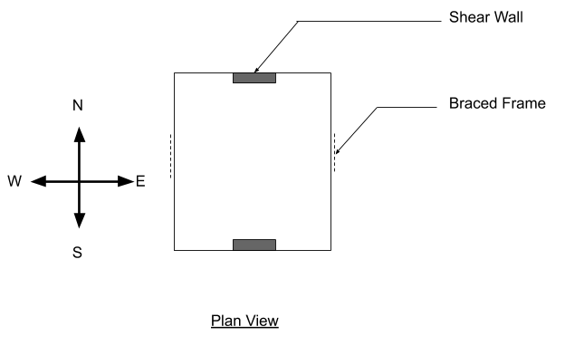For a system with two distinct lateral systems, the building periods for each primary direction need to be evaluated. For example, a building with braced frames and shear walls would use different Ct and x values from ASCE 7 Table 12.8-2 depending on the direction of earthquake (EQ) forces.
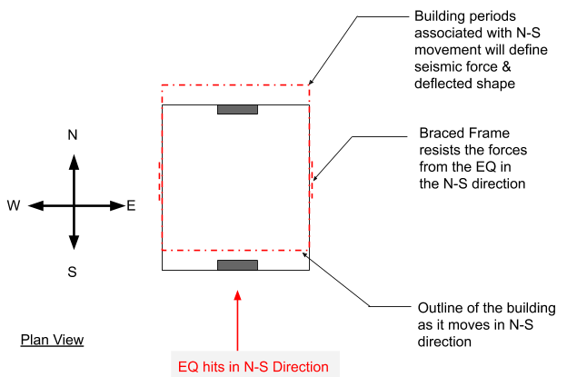We would evaluate the building period in the N-S direction and could use the Ct and x values for braced frames.
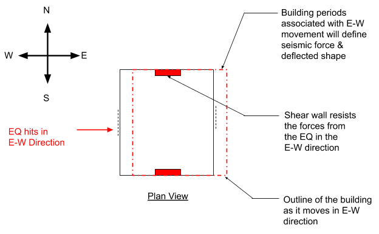In the E-W direction, we would use the applicable formulas for shear walls to determine the building period. The significance is that the building period determines your acceleration using the response spectrum, and these different lateral systems have different strengths and design procedures, so they need to be separately evaluated.
There is one last note to remember regarding different lateral systems and building period. The below picture shows both shear walls and moment frames used for the N-S direction lateral system. In this case, we should not use the Ct or x values corresponding to a moment-resisting system from Table 12.8-2 because the shear walls will take some of the force. We should use “all other structural systems.”
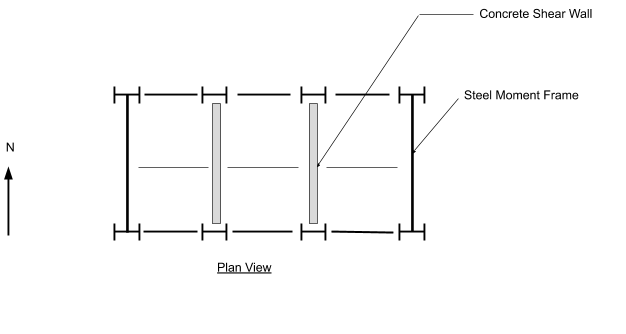Additional Reading Resources:
- https://www.fema.gov/media-library-data/20130726-1556-20490-0102/fema454_chapter4.pdf
- http://ijsetr.org/wp-content/uploads/2017/11/IJSETR-VOL-6-ISSUE-11-1468-1477.pdf
- http://www.ce.memphis.edu/7119/PDFs/Fema310/44.pdf